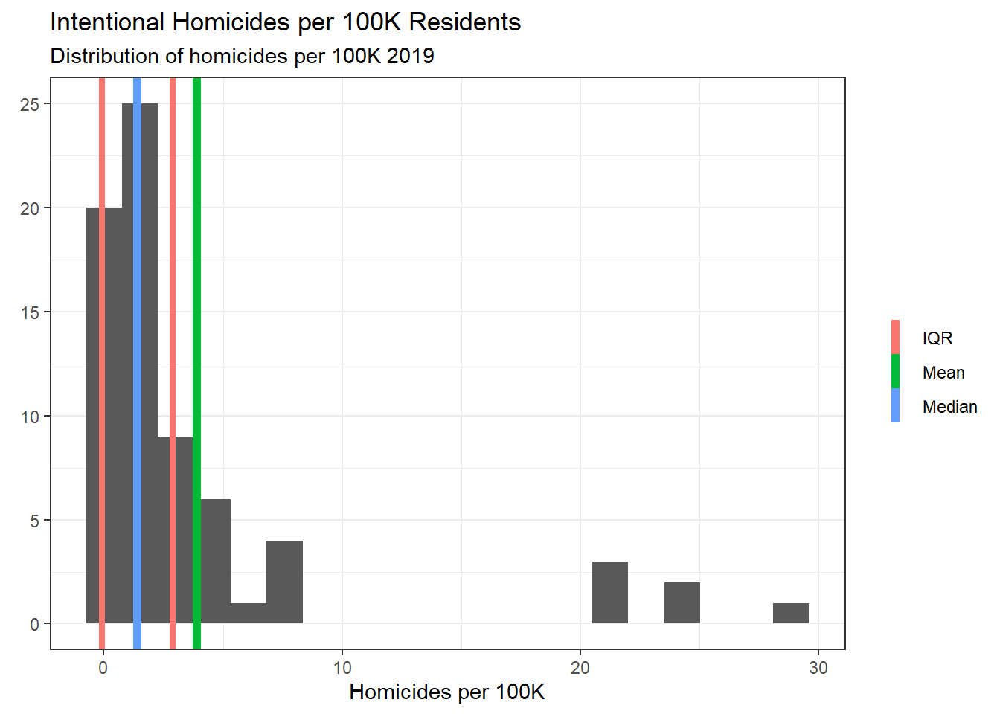
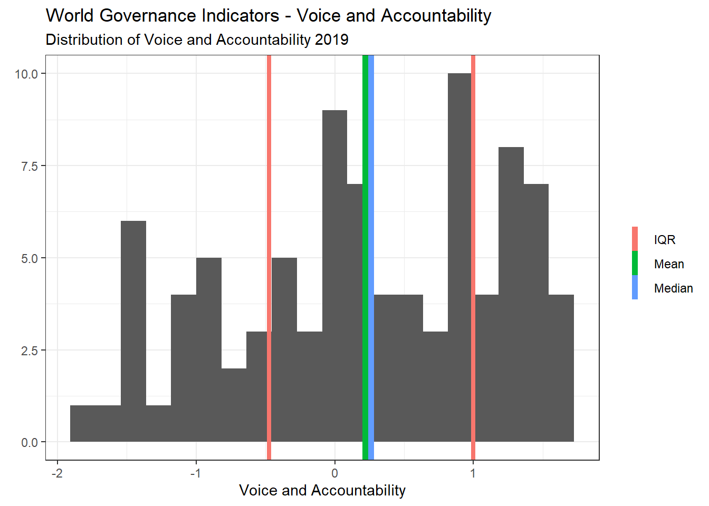
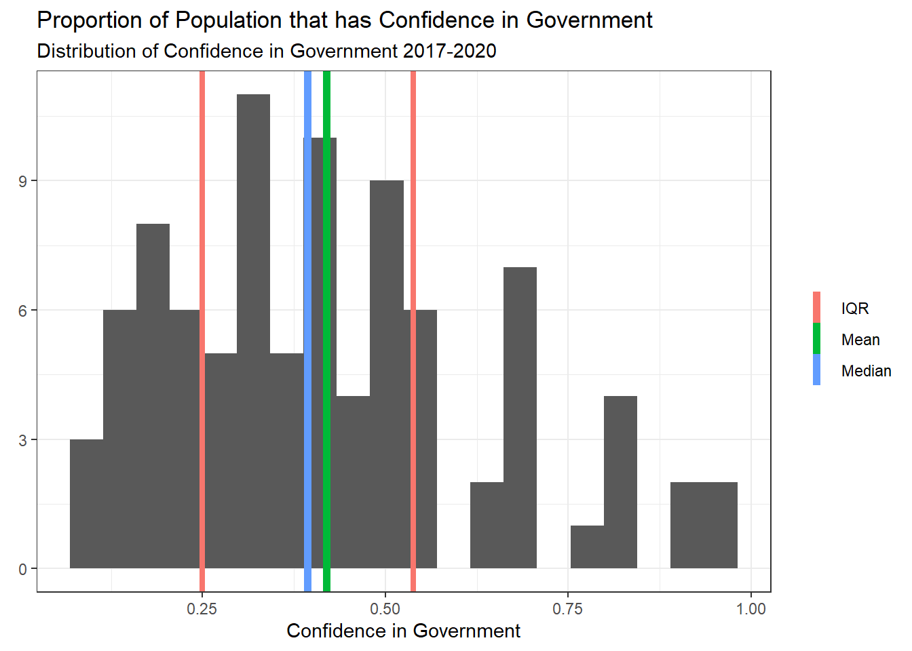

Code
library(dplyr)
library(ggplot2)
data_final <- read.csv("_data/FinalPart1_ToryBartelloni_data.csv")The concept of political trust has been researched in great depth for decades. That research indicates that a number of factors have at least some impact on a group’s level of trust or confidence in their government. Most of the factors studied are related to the public’s perception of government performance including control over crime, the economy, and the appearance of corruption and scandal. To this point there has been no consensus or holistic model that produces a satisfactory answer to the question why do groups trust and have confidence in their government? In this project we will try to bring us one step closer by examining a model that takes into account several factors.
When seen as part of a social ecosystem a financially healthy and legitimate government is one pillar of a stable society. The level of confidence a population has in its government both provides the government with legitimacy and, likely as a direct consequence, allows the government to operate and implement large scale projects on behalf of the population being governed. To understand how to build and maintain legitimate and effect government we need to better understand the factors that allow for this condition to exist.
What factors affect a population’s confidence in their national government?
Prior research has indicated that confidence in government is affected by factors that I will put in two broad categories: perception of government performance and social cultural values. There is strong evidence that socio-economic factors, economic performance, perceived corruption, and social capital have impacts on confidence in government. Using information available through the World Bank, Transparency International, and the World Values Survey I will examine a specific aspect of government influence: whether the level of political freedom and access to participation a government fosters has an affect on the population’s overall confidence in their government.
H0: A population’s confidence in their national government is not affected by the levels of political freedom and political participation made possible within the country.
H1: A population’s confidence in their national government will be positively related to the levels of political freedom and political participation possible within the country.
To perform this analysis I will be using data collected from three sources: Transparency International’s Corruption Perceptions Index, the World Bank’s Development and Governance Indicators, and the World Values Survey and European Values Survey joint data set. Below I will provide an overview of each data set and the key variables I expect to use from each.
Loading packages and reading in the data.
library(dplyr)
library(ggplot2)
data_final <- read.csv("_data/FinalPart1_ToryBartelloni_data.csv")First things first, I will include a brief look at the data set and then we will look at the specifics.
str(data_final)'data.frame': 91 obs. of 27 variables:
$ X : int 1 2 3 4 5 6 7 8 9 10 ...
$ Power_Distance : int NA NA 49 NA 38 11 NA 80 NA NA ...
$ Individualism : int NA NA 46 NA 90 55 NA 20 NA NA ...
$ Masculinity : int NA NA 56 NA 61 79 NA 55 NA NA ...
$ Uncertainty_Avoidance : int NA NA 86 NA 51 70 NA 60 NA NA ...
$ Time_Perspective : int 61 NA 20 61 21 60 61 47 81 70 ...
$ Indulgence : int 15 65 62 NA 71 63 22 20 15 44 ...
$ Country_Final : chr "Albania" "Andorra" "Argentina" "Armenia" ...
$ CPI.Score.2018 : int 36 NA 40 35 77 76 25 26 44 38 ...
$ GDP_per_Capita : num 13653 NA 22066 13654 49309 ...
$ Homicides_per_100K : num 2.256 NA 5.143 2.468 0.893 ...
$ Gov_Exp_Employees : num 9.35e+10 NA 5.52e+11 3.01e+11 5.37e+10 ...
$ Gov_Exp_GoodsAndServices : num 3.66e+10 NA 1.74e+11 2.06e+11 5.37e+10 ...
$ Gov_Exp_Total : num 3.92e+11 NA 4.75e+12 1.42e+12 5.09e+11 ...
$ Gov_Exp_Interest : num 3.50e+10 NA 7.50e+11 1.58e+11 1.80e+10 ...
$ Gov_Exp_Subsidies : num 2.09e+11 NA 3.05e+12 5.44e+11 3.41e+11 ...
$ Gov_Exp_Military : num 2.17e+10 NA 1.51e+11 3.24e+11 3.73e+10 ...
$ Wage_Workers : num 45.7 NA 73.5 66 83.4 ...
$ Vulnerable_Employment : num 51.2 NA 22.7 33.1 10.6 ...
$ WGI_Control_Corruption : num -0.5434 1.231 -0.0837 -0.2038 1.8221 ...
$ WGI_Government_Effectiveness: num -0.0333 1.901 -0.0965 -0.1975 1.5649 ...
$ WGI_Political_Stability : num 0.1112 1.6022 -0.0914 -0.4134 0.9117 ...
$ WGI_Regulatory_Quality : num 0.286 1.227 -0.437 0.256 1.872 ...
$ WGI_Rule_of_Law : num -0.403 1.572 -0.408 -0.157 1.726 ...
$ WGI_Voice_Accountability : num 0.1427 1.1101 0.5724 0.0555 1.2674 ...
$ Gov_Confidence : num 0.148 0.491 0.314 0.308 0.313 ...
$ Gov_Confidence_Mean : num 3.39 2.56 2.94 2.97 2.82 ...summary(data_final) X Power_Distance Individualism Masculinity
Min. : 1.0 Min. : 11.00 Min. : 6.00 Min. : 5.00
1st Qu.:23.5 1st Qu.: 41.00 1st Qu.:24.00 1st Qu.: 39.50
Median :46.0 Median : 63.00 Median :41.00 Median : 49.00
Mean :46.0 Mean : 59.61 Mean :45.32 Mean : 49.31
3rd Qu.:68.5 3rd Qu.: 72.00 3rd Qu.:68.50 3rd Qu.: 63.50
Max. :91.0 Max. :104.00 Max. :91.00 Max. :110.00
NA's :32 NA's :32 NA's :32
Uncertainty_Avoidance Time_Perspective Indulgence Country_Final
Min. : 8.00 Min. : 0.00 Min. : 0.00 Length:91
1st Qu.: 51.00 1st Qu.: 31.25 1st Qu.: 28.00 Class :character
Median : 68.00 Median : 51.50 Median : 42.50 Mode :character
Mean : 66.46 Mean : 50.46 Mean : 44.42
3rd Qu.: 85.00 3rd Qu.: 69.00 3rd Qu.: 63.50
Max. :112.00 Max. :100.00 Max. :100.00
NA's :32 NA's :21 NA's :19
CPI.Score.2018 GDP_per_Capita Homicides_per_100K Gov_Exp_Employees
Min. :17.00 Min. : 2221 Min. : 0.2067 Min. :1.635e+09
1st Qu.:33.00 1st Qu.: 12845 1st Qu.: 0.7453 1st Qu.:1.830e+10
Median :44.50 Median : 25641 Median : 1.3927 Median :7.092e+10
Mean :50.14 Mean : 30218 Mean : 3.8824 Mean :7.315e+12
3rd Qu.:71.25 3rd Qu.: 42847 3rd Qu.: 3.7136 3rd Qu.:4.237e+11
Max. :88.00 Max. :127273 Max. :28.7367 Max. :3.726e+14
NA's :3 NA's :3 NA's :20 NA's :17
Gov_Exp_GoodsAndServices Gov_Exp_Total Gov_Exp_Interest
Min. :7.335e+08 Min. :8.294e+09 Min. :-1.270e+09
1st Qu.:8.305e+09 1st Qu.:8.688e+10 1st Qu.: 3.377e+09
Median :3.493e+10 Median :4.187e+11 Median : 1.754e+10
Mean :5.153e+12 Mean :4.773e+13 Mean : 4.768e+12
3rd Qu.:2.275e+11 3rd Qu.:2.338e+12 3rd Qu.: 2.648e+11
Max. :2.510e+14 Max. :2.295e+15 Max. : 2.751e+14
NA's :17 NA's :17 NA's :16
Gov_Exp_Subsidies Gov_Exp_Military Wage_Workers Vulnerable_Employment
Min. :2.170e+09 Min. :0.000e+00 Min. :15.85 Min. : 3.30
1st Qu.:4.227e+10 1st Qu.:3.952e+09 1st Qu.:57.30 1st Qu.: 9.09
Median :2.930e+11 Median :2.669e+10 Median :77.26 Median :18.87
Mean :2.540e+13 Mean :9.487e+12 Mean :71.64 Mean :24.75
3rd Qu.:9.952e+11 3rd Qu.:1.584e+11 3rd Qu.:86.35 3rd Qu.:36.96
Max. :1.138e+15 Max. :5.314e+14 Max. :95.73 Max. :83.70
NA's :17 NA's :11 NA's :2 NA's :2
WGI_Control_Corruption WGI_Government_Effectiveness WGI_Political_Stability
Min. :-1.560314 Min. :-1.7516 Min. :-2.603781
1st Qu.:-0.533848 1st Qu.:-0.1993 1st Qu.:-0.565488
Median : 0.009211 Median : 0.2023 Median : 0.111169
Mean : 0.272002 Mean : 0.4396 Mean : 0.007762
3rd Qu.: 1.221506 3rd Qu.: 1.3999 3rd Qu.: 0.775985
Max. : 2.167130 Max. : 2.2127 Max. : 1.639301
WGI_Regulatory_Quality WGI_Rule_of_Law WGI_Voice_Accountability
Min. :-2.3622 Min. :-2.2536 Min. :-1.7968
1st Qu.:-0.3226 1st Qu.:-0.4966 1st Qu.:-0.4587
Median : 0.5280 Median : 0.1570 Median : 0.2624
Mean : 0.4615 Mean : 0.3214 Mean : 0.2182
3rd Qu.: 1.3576 3rd Qu.: 1.3373 3rd Qu.: 1.0170
Max. : 2.1601 Max. : 2.0488 Max. : 1.6552
Gov_Confidence Gov_Confidence_Mean
Min. :0.08744 Min. :1.561
1st Qu.:0.24726 1st Qu.:2.502
Median :0.39372 Median :2.711
Mean :0.41976 Mean :2.708
3rd Qu.:0.53634 3rd Qu.:3.020
Max. :0.95441 Max. :3.448
A lot going on there, but we can see that the data was 91 observations fo 27 variables. Each observation in the data is a country and there are observations for a number of potentially useful variables. Choosing the best variables and assessing the power of our test will be important due to the noticeable number of NA values for some of the variables.
The Corruption Perceptions Index (CPI) is created by Transparency International by taking a combination of 13 different data sources including assessments and surveys. These sources are largely comprised of experts and business interests so are not a direct reflection of the general public. The scores from each of the sources are standardized, averaged, and then scaled to provide a score for each of the countries in the data sources. What we end up with is Corruption Perception score between 1-100 for each of the countries.
data_final %>% ggplot(aes(x=CPI.Score.2018)) +
geom_histogram(bins = 20) +
geom_vline(aes(xintercept=median(CPI.Score.2018,na.rm=TRUE),
color="Median"),
size=2) +
geom_vline(aes(xintercept=mean(CPI.Score.2018,na.rm=TRUE),
color="Mean"),
size=2) +
geom_vline(aes(xintercept=
median(CPI.Score.2018,na.rm=TRUE)+
IQR(CPI.Score.2018,na.rm=TRUE)/2,
color="IQR"),
size=1.5) +
geom_vline(aes(xintercept=
median(CPI.Score.2018,na.rm=TRUE)-
IQR(CPI.Score.2018,na.rm=TRUE)/2,
color="IQR"),
size=1.5) +
labs(title="Corruption Perceptions Index",
subtitle="Distribution of CPI 2018",
x="CPI Score",
y=element_blank(),
colour=element_blank()) +
theme_bw()The World Bank collects data from many different sources to obtain indicators for world development as well as the World Governance Indicators project.
The Development Indicators are taken from a wide variety of sources. We will be using two primary indicators: GDP per Capita and Intentional Homicides per 100K people. GDP per capita is derived from the World Bank and OECD National Accounts data while Intentional Homicides are taken from the UN Office on Drugs and Crime’s International Homicide Statistics database.
data_final %>% ggplot(aes(x=GDP_per_Capita)) +
geom_histogram(bins = 20) +
geom_vline(aes(xintercept=median(GDP_per_Capita,na.rm=TRUE),
color="Median"),
size=2) +
geom_vline(aes(xintercept=mean(GDP_per_Capita,na.rm=TRUE),
color="Mean"),
size=2) +
geom_vline(aes(xintercept=
median(GDP_per_Capita,na.rm=TRUE)+
IQR(GDP_per_Capita,na.rm=TRUE)/2,
color="IQR"),
size=1.5) +
geom_vline(aes(xintercept=
median(GDP_per_Capita,na.rm=TRUE)-
IQR(GDP_per_Capita,na.rm=TRUE)/2,
color="IQR"),
size=1.5) +
labs(title="Gross Domestic Product per Capita",
subtitle="Distribution of GDP per capita 2019",
x="GDP per Capita",
y=element_blank(),
colour=element_blank()) +
theme_bw()
data_final %>% ggplot(aes(x=Homicides_per_100K)) +
geom_histogram(bins = 20) +
geom_vline(aes(xintercept=median(Homicides_per_100K,na.rm=TRUE),
color="Median"),
size=2) +
geom_vline(aes(xintercept=mean(Homicides_per_100K,na.rm=TRUE),
color="Mean"),
size=2) +
geom_vline(aes(xintercept=
median(Homicides_per_100K,na.rm=TRUE)+
IQR(Homicides_per_100K,na.rm=TRUE)/2,
color="IQR"),
size=1.5) +
geom_vline(aes(xintercept=
median(Homicides_per_100K,na.rm=TRUE)-
IQR(Homicides_per_100K,na.rm=TRUE)/2,
color="IQR"),
size=1.5) +
labs(title="Intentional Homicides per 100K Residents",
subtitle="Distribution of homicides per 100K 2019",
x="Homicides per 100K",
y=element_blank(),
colour=element_blank()) +
theme_bw()
The World Governance Indicators are a combination of enterprise, citizen, and expert survey respondents from around the world. They use more than 30 surveys to create their six indicators with each indicator using different surveys and different data from each survey to aggregate to the final indicator. The one I am most interested in at this juncture is Voice and Accountability which attempts to measure the level of political freedom (i.e. freedom of speech, press, etc.) and access to participation in goverance by the public (i.e. free and fair elections).
data_final %>% ggplot(aes(x=WGI_Voice_Accountability)) +
geom_histogram(bins = 20) +
geom_vline(aes(xintercept=median(WGI_Voice_Accountability,na.rm=TRUE),
color="Median"),
size=2) +
geom_vline(aes(xintercept=mean(WGI_Voice_Accountability,na.rm=TRUE),
color="Mean"),
size=2) +
geom_vline(aes(xintercept=
median(WGI_Voice_Accountability,na.rm=TRUE)+
IQR(WGI_Voice_Accountability,na.rm=TRUE)/2,
color="IQR"),
size=1.5) +
geom_vline(aes(xintercept=
median(WGI_Voice_Accountability,na.rm=TRUE)-
IQR(WGI_Voice_Accountability,na.rm=TRUE)/2,
color="IQR"),
size=1.5) +
labs(title="World Governance Indicators - Voice and Accountability",
subtitle="Distribution of Voice and Accountability 2019",
x="Voice and Accountability",
y=element_blank(),
colour=element_blank()) +
theme_bw()
The World Values Survey and European Values Survey collect data by conducting representative surveys in around 100 countries every five years. Their surveys are specifically designed to gather opinions on values ranging from political to religious to social. One of the questions they consistently ask is for respondents to indicate what level of confidence they have in their government. This will be our dependent variable of interest, Confidence in Government. In the plot below it is displayed as a proportion of respondents that said they had at least some confidence in their government.
data_final %>% ggplot(aes(x=Gov_Confidence)) +
geom_histogram(bins = 20) +
geom_vline(aes(xintercept=median(Gov_Confidence,na.rm=TRUE),
color="Median"),
size=2) +
geom_vline(aes(xintercept=mean(Gov_Confidence,na.rm=TRUE),
color="Mean"),
size=2) +
geom_vline(aes(xintercept=
median(Gov_Confidence,na.rm=TRUE)+
IQR(Gov_Confidence,na.rm=TRUE)/2,
color="IQR"),
size=1.5) +
geom_vline(aes(xintercept=
median(Gov_Confidence,na.rm=TRUE)-
IQR(Gov_Confidence,na.rm=TRUE)/2,
color="IQR"),
size=1.5) +
labs(title="Proportion of Population that has Confidence in Government",
subtitle="Distribution of Confidence in Government 2017-2020",
x="Confidence in Government",
y=element_blank(),
colour=element_blank()) +
theme_bw()
We have now gone through the high level introduction to our hypothesis and data for analysis. Moving forward we will focus on the factors that affect confidence in government using data related to government performance, economics, crime, and culture.